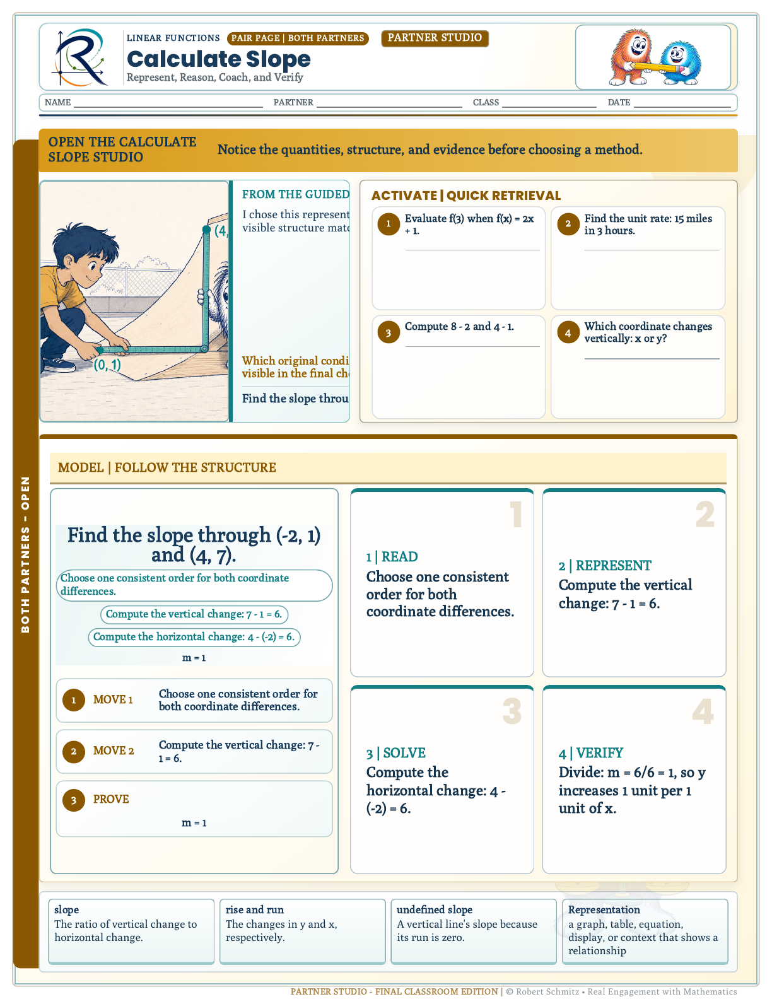
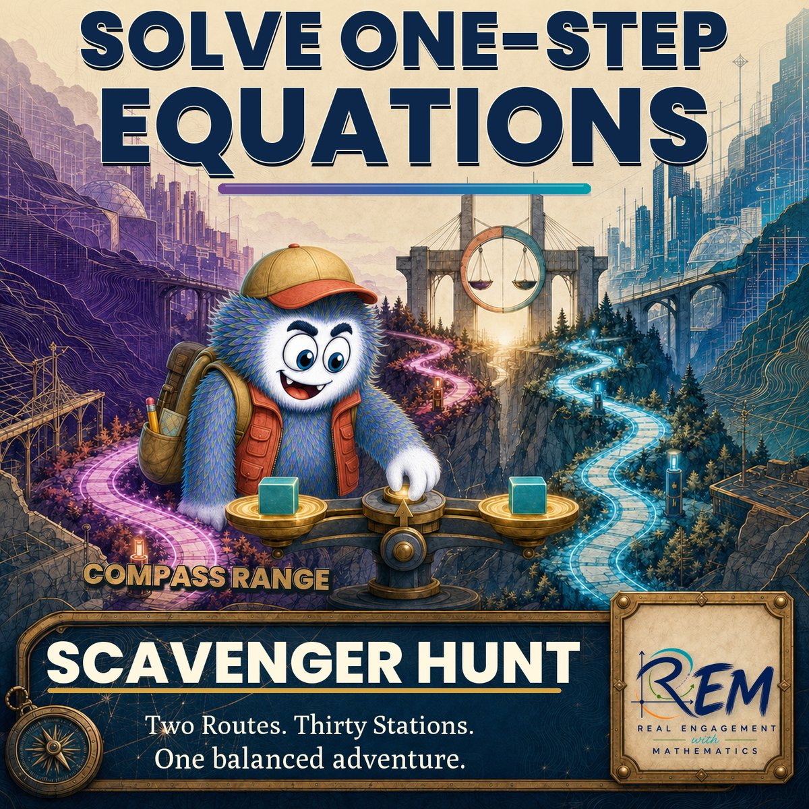
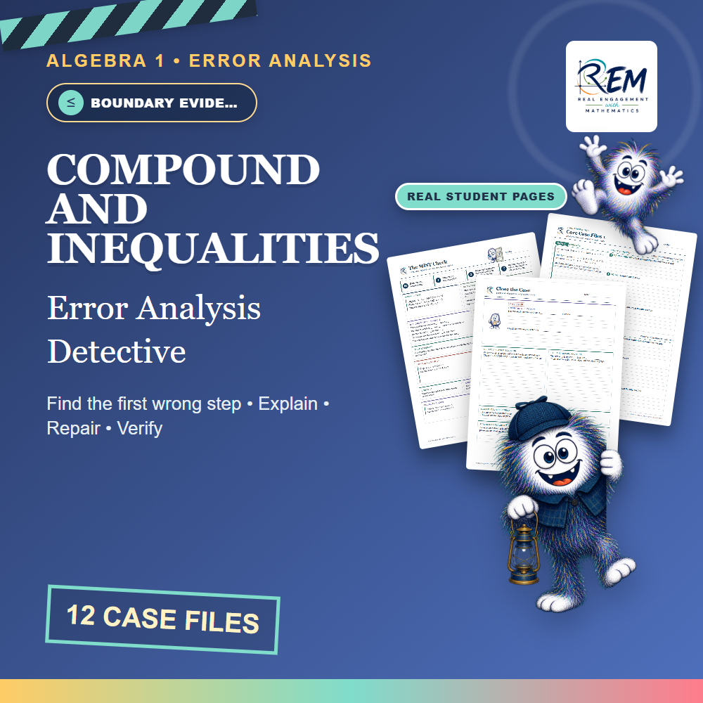
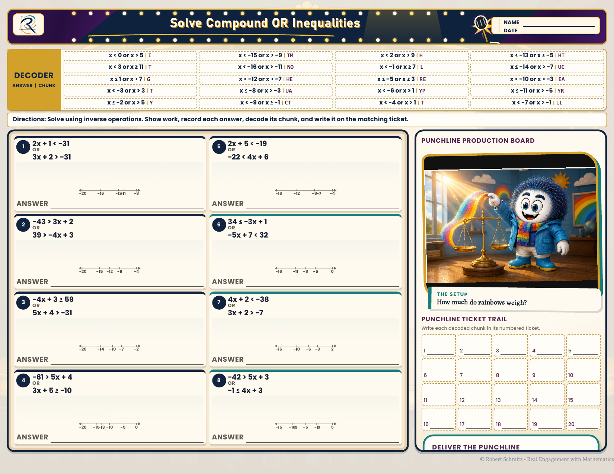

Curriculum systems design
Scalable Algebra 1 Curriculum Architecture
A 144-lesson Guided Notes course — every lesson a student reconstruction page set paired with an annotated teacher edition — designed assessment-first on one course spine, produced through a rules-driven engine, and surrounded by reusable practice systems.
Overview
This case study documents curriculum systems design work embodied in Real Engagement with Mathematics (REM)—not as a marketplace listing, but as an instructional architecture. Its core is a Guided Notes course of 144 lessons across ten units: every lesson ships as a student reconstruction page set — the learner completes the prediction, the vocabulary, and every solve — paired with a teacher edition in which each of those responses is already annotated in.
The course is designed to one spine — Conceptual Understanding → Visual Understanding → Procedural Fluency → Transfer — and each lesson runs a six-phase rhythm, Activate → Model → Guide → Apply → Reflect → Extend. Around that core sit reusable practice formats—Punchline Math, Color By Number, Scavenger Hunt, Error Analysis Detective, and Rally Coach partner practice—treated here as instructional asset systems: templates with rules for difficulty progression, feedback, and classroom logistics. Behind all of it is a production engine that will not render a page until the lesson's metadata, concept models, and assets resolve.
Challenge
Algebra 1 programs often accumulate disconnected worksheets and one-off lessons. Teachers then rebuild structure every week: how to open, how to model, how much guided practice, when to check for understanding, and how to extend for students who finish early—or need another on-ramp.
The design problem was to create a scalable curriculum architecture: shared lesson phases, predictable asset types, and cover/page systems that reduce design friction while preserving mathematical rigor and standards alignment.
Audience
- Secondary Algebra 1 teachers implementing a coherent unit sequence
- Intervention and intensive settings that need structured practice without lowering cognitive demand indiscriminately
- Curriculum leads who need templates that travel across topics and classrooms
My role
- Wrote the course architecture: Florida B.E.S.T. benchmark-cluster crosswalk, unit big ideas, and a per-unit misconception registry
- Designed the Guided Notes reconstruction template — phase rail, worked-example fading tiers, and the annotated teacher edition
- Defined the Activate–Extend lesson spine and the practice-system templates around it
- Specified the production pipeline: metadata → scene/asset resolution → renderers → teacher-key mode → publication gate
- Produced student pages, teacher editions, and cover systems as system exemplars
Constraints
- Must be teachable in real secondary class periods
- Print- and LMS-friendly distribution without custom software
- Visual system must stay professional and consistent across asset types
- Templates must support many Algebra 1 topics without rewriting the pedagogy each time
Artifacts — the instructional core first
Real REM pages as instructional design evidence, organized the way the system is organized: the Guided Notes core, then the course map, then each practice engine as a student page paired with its worked teacher key.
Guided Notes — student reconstruction
The core artifact family: 144 lessons, each a reconstruction page set the student completes and a teacher edition with every response annotated in red. The pages below are U1-L01, Solving One-Step Equations, exactly as shipped.


Punchline Math — self-checking practice


Color By Number — visual self-verification


Scavenger Hunt — movement with accountability


Rally Coach — coached partner practice
Structured Partner A/B practice where the coach advances the reasoning without taking the pencil. The Calculate Slope pages target slope as the constant ratio of vertical change to horizontal change, and run 12 partner rounds per pair — each partner drives six and coaches six, switching roles every card.



More engines in the same architecture


The methodology — design order first, then an engine that enforces it
The design order is Dick & Carey's: analyze the standard and the learner, write the measurable objective, design the assessment that proves it, and only then build the instruction. In practice, the reconstruction blanks, readiness checks, and annotated teacher edition of a Guided Notes lesson are specified before its hook and worked examples are authored — the instruction exists to earn the evidence, not the other way around.
The analysis layer is written down, not tribal knowledge. The course architecture document crosswalks every unit to Florida B.E.S.T. benchmark clusters but organizes the course by big ideas — equality, structure, function, change, modeling, evidence — rather than benchmark-number order. Each unit carries a “why this unit exists” rationale, its key understandings, a registry of the misconceptions it must defeat (move-and-change-sign, “equals means the answer comes next,” checking against the transformed equation instead of the original), a visual-model rationale with a fade plan, and cumulative mastery checks specified in place of one-and-done unit tests. Sequencing follows dependency analysis: slope is developed from covariation before any formula is named, and exponent rules are deliberately reconnected to exponential functions instead of drilling them in isolation.
Production runs the same order. The REM Engine is an orchestrator that will not dispatch a renderer until everything upstream of it resolves:
- Lesson requestCourse, unit, lesson → one canonical lesson ID
- Curriculum metadataStandards, objective, primary concept, template family
- Scene & graph resolutionConcept models resolved from the primary concept; graph needs declared
- Asset resolutionAlias normalization → usage priority → manifest lookup, before any rendering
- RenderersGuided Notes + practice pages built from the resolved plan
- Teacher-key modeAnnotated edition rendered from the same source, never re-authored
- Publication gateFail-closed validation before a lesson package exists
Three production rules do the instructional-design heavy lifting. Every required asset must resolve — a missing concept model or graph template is a blocking failure, not a shrug. The teacher edition is a renderer mode, so student pages and answer keys are generated from one source and validated so annotations never leak into, or collide with, student-facing content. And the publication gate is fail-closed: if any artifact, export, or student/teacher-separation check fails, the run stops with a structured error report instead of shipping a partial lesson.
ADDIE, mapped to the actual system
- Analyze Florida B.E.S.T. benchmark-cluster crosswalk before any authoring; a per-unit misconception registry; a “why this unit exists” rationale for every unit — grounded in 11+ years of watching where learners actually break.
- Design The course spine (conceptual → visual → procedural → transfer), the unit architecture, a template-family map deciding which engine carries which lesson, visual-model selection with explicit fade plans, and the Activate→Extend lesson spine.
- Develop Engine renderers — Guided Notes, practice, and teacher-key mode — over a versioned asset library of SVG masters and PNG delivery files, so a new topic inherits production quality instead of ad hoc formatting.
- Implement Print and LMS delivery without custom software; Canvas/QTI packaging; a district Canvas course package delivered by instructors who did not build it — materials designed for the facilitator, not just the author.
- Evaluate The fail-closed publication gate before release; state assessment, district benchmark, and formative results afterward — driving revision of the materials themselves, not just the delivery.
Visual design system
Each asset family carries a branded cover system — consistent title hierarchy, format promise, and the REM mark — so a teacher can identify format and skill in one glance. Underneath it sits a maintained asset architecture: structural SVG masters generating a multi-resolution PNG delivery library across the course's concept-model families (algebra tiles, balance scale, number line, coordinate plane, function machine, area model, equation mat), governed by a locked design-language spec. Shown as document/visual design evidence.






Character system — kept in its lane
The brand mascot is designed like any other reusable asset: one character drawn to a fixed model sheet, costumed per engine — artist for Color By Number, detective for Error Analysis — so covers and scene art stay recognizable across the course. It is deliberately quarantined to covers and scene illustration; on worksheets the mathematics, models, and workspace always outrank the character.


Explaining an engine to its facilitator
Each practice engine also ships with a sub-60-second trailer produced for its product listing. They are shown here as communication design, not as a storefront: the instructional-design skill on display is compressing a classroom routine — roles, feedback logic, and what the teacher receives — into a minute a busy teacher will actually watch.
Lesson flow in motion
Short-form modeling video from the REM system, plus numbered frames showing how assets sequence in a lesson: architecture → model → formative check → collaborative apply. The full practice-system walkthrough lives on the home page.

Design process
-
Analyze the standard and the learner
Crosswalk the unit to its benchmark cluster; write down the misconceptions it must defeat — sourced from 11+ years of lead-teaching, mentoring, and watching exactly where student routes break.
-
Fix the objective, then the evidence
Write the measurable objective and design the checks that prove it — the reconstruction blanks, readiness items, and teacher edition are specified before any instruction is authored.
-
Author instruction into the spine
Hook with a prediction, model on the unit's designated visual representation, then fade support tier by tier across Activate / Model / Guide / Apply / Reflect / Extend — gradual release with room for topic-specific mathematics.
-
Systematize production
Repeatable engine formats, cover systems, page layouts, and answer-key patterns — plus the production pipeline itself — so a new topic inherits navigation, hierarchy, and production quality rather than ad hoc formatting.
-
Gate, measure, revise
A fail-closed publication gate before release; assessment and classroom evidence after it, feeding revision of the materials themselves.
Design decisions
- Reconstruction over transcription Guided Notes are built as pages the student completes — predict, name the move, solve, check, define — rather than notes to copy. The annotated teacher edition is the completed reconstruction, which makes the evidence design visible on every page.
- Phase-based lesson architecture over topic silos Teachers learn one instructional rhythm; content authors fill the slots. Scales better than reinventing lesson flow per worksheet.
- Practice formats as systems, not one-offs Punchline, Color By Number, Scavenger Hunt, Error Analysis Detective, and Rally Coach each encode a learning interaction (self-checking, visual reinforcement, movement with accountability, misconception analysis, structured peer coaching)—reusable across standards.
- Error Analysis Detective as formative design Positions mistakes as objects of study—supporting diagnostic thinking rather than only correct/incorrect scoring.
- Extend as a first-class phase Prevents “early finishers get busywork” by designing intentional enrichment or transfer tasks inside the same architecture.
Solution
REM’s Algebra 1 curriculum architecture packages:
- Guided Notes core: 144 lessons across ten units — student reconstruction page sets paired with fully annotated teacher editions
- Lesson engine: Activate → Model → Guide → Apply → Reflect → Extend on a conceptual → visual → procedural → transfer course spine
- Production engine: a metadata-driven pipeline — scene, graph, and asset resolution, paired renderers, teacher-key mode, and a fail-closed publication gate
- Practice asset systems: Punchline Math, Color By Number, Scavenger Hunt, Error Analysis Detective, and Rally Coach—each with student pages and teacher keys
- Document / visual design system: covers, page hierarchy, concept-model asset library, and production conventions that keep materials coherent across a course
Framed for portfolio review, this is curriculum systems and instructional design work: templates, sequencing, learner experience, and scalable production—not a commercial shop front.
Tools
Learning principles applied
Gagné's events + Gradual Release
The lesson spine runs the events in order: the hook gains attention, Quick Retrieval recalls prerequisites without touching the new idea, Model presents on the unit's visual representation, and the Guide page fades support in tiers — first move shown, brief cue, bare item — until the learner performs and checks alone.
Mayer's multimedia principles
Lesson media is segmented — one routine per sub-minute video, worked step by step — and page graphics are instructional models (balance scale, tiles, tape diagrams) that carry the mathematics, not decoration around it.
UDL-minded options
Five practice engines offer varied means of engagement and expression on the same objective, and the Daily Core / Additional Practice split builds planned flexibility into every Guided Notes lesson.
ARCS + Quality Matters as lenses
Hooks open on concrete contexts with a prediction stake; fading tiers build confidence before independent items. Quality Matters serves as a review lens for online delivery — used as a standard of practice, not a claimed score.
Outcome
The architecture holds at scale: 144 Guided Notes lessons across ten units, every one shipped as a student reconstruction page set with an annotated teacher edition, produced through the same pipeline and quality gate. Teachers and designers inherit lesson phases, evidence patterns, and asset templates instead of starting from a blank page; new topics are authored into the same engines, preserving pedagogy and visual consistency.
Evidence for hiring review is the system design itself—course architecture, the Guided Notes core, the production pipeline, and the artifact types shown here—not sales or download metrics.
Reflection
Building REM forced an instructional designer’s question: what must stay constant so quality scales? The answer was the evidence design and the spine — objectives and checks fixed before instruction, one course progression from conceptual understanding to transfer, and a production pipeline that refuses to ship a lesson whose parts don’t resolve. Framing those materials as curriculum architecture (rather than isolated classroom handouts) is how this portfolio communicates transferable ID skill: systems thinking, template design, and learner experience across a course.